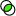
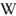
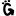

| Placeholder | Description | Output |
|---|
| %tagurl% | The URL of a tag | http://www.site.com/tags/foo_bar |
| %taglink% | A link to a tag | Foo Bar |
| %tag% | The tag, as found in URLs | foo_bar |
| %tagdisplay% | The tag as displayed (includes spaces) | Foo Bar |
| %tagjsescaped% | The tag, escaped for including in javascript | Bar\'s |
| %tagcount% | The number of times the tag is in use | 12 |
| %tagid% | The id for the tag | 15 |
| %tagweight% | The percentage of times this tag is used (#this tag/#tag associations) | 7.56 |
| %tagweightint% | The ceiling of %tagweight% | 8 |
| %tagweightcolor% | The colour that corresponds to the tag weight | #888888 |
| %tagweightfontsize% | The font size that corresponds to the tag weight | 85% |
| %tagrelweight% | The relative tag weight (#this tag/#the maximum tag). The most popular has a relative weight of 100%. If the most popular tag is used 25 times, and the least popular is used once; then the least popular has a weight of (1/25) * 100 = 4% | 23.5 |
| %tagrelweightint% | The relative tag weight, rounded up to the nearest integer | 24 |
| %tagrelweightcolor% | The colour that corresponds to the tag weight | #111111 |
| %tagrelweightfontsize% | The font size that corresponds to the tag weight | 114% |
| %tagrelweightrank% | The tag rank of a tag. If there are tags used 10 times, 8 times, 2 times and once; the tag rank of 10x is 100, 8x is 75, 2x is 50 and 1x is 25. This is useful for evening out spikes at the popular end of the scale. | 23.5 |
| %tagrelweightintrank% | The tag rank, rounded up to the nearest integer | 24 |
| %tagrelweightcolorrank% | The colour that corresponds to the tag rank | #111111 |
| %tagrelweightfontsizerank% | The font size that corresponds to the tag rank | 114% |
| %relatedtagids% | A comma separated list of related tag ids | 12,42,56 |
| %intersectionurl% | If viewing either a tag page, or the intersection of two or more tags, this is the URL of the page to see the intersection of the current tags, and the tag being displayed. | http://www.site.com/tags/Monkey+Fishsticks+Foo_Bar |
| %unionurl% | If viewing either a tag page, or the union of two or more tags, this is the URL of the page to see the union of the current tags, and the tag being displayed. | http://www.site.com/tags/Monkey|Fishsticks|Foo_Bar |
| %intersectionicon% | Link to the intersection url, with the intersection icon. |  |
| %intersectionlink% | Link to the intersection url, displaying a + as the link text | + |
| %unionicon% | Link to the union url, with the union icon | |
| %unionlink% | Link to the intersection url, displaying a | as the link text | | |
| %operatortext% | On intersection pages, "and"; on union pages "or". Otherwise empty. | and |
| %operatorsymbol% | On intersection pages, "+"; on union pages "|". Otherwise empty. | + |
| %technoratitag% | Link to the Technorati page for the tag. Turns spaces into +'s in the tag URL | Foo Bar |
| %flickrtag% | Link to the Flickr page for the tag. This removes spaces from the tag, in the URL. | Foo Bar |
| %delicioustag% | Link to the del.icio.us page for the tag. The tag in the URL is left unchanged. | Foo Bar |
| %wikipediatag% | Link to the Wikipedia page for the tag. Spaces are converted to underscores in the tag URL. | Foo Bar |
| %gadabetag% | Link to the gada.be page for the tag. Spaces are converted to fullstops in the tag URL. | Foo Bar |
| %znifftag% | Link to the Zniff page for the tag. Spaces are converted to underscores in the tag URL. | Foo Bar |
| %rsstag% | A link to the RSS feed for the tag | Foo Bar |
| %technoratiurl% | The url to Technorati, with an icon | http://www.technorati.com/tag/foo+bar |
| %flickrurl% | The url Flickr | http://www.flickr.com/photos/tags/foobar |
| %deliciousurl% | The url to del.icio.us | http://del.icio.us/tags/foo_bar |
| %wikipediaurl% | The url to Wikipedia | http://en.wikipedia.org/wiki/foo_bar |
| %gadabeurl% | The url to gada.be | http://foo.bar.gada.be |
| %zniffurl% | The url to Zniff | http://zniff.com/?s=%22foo_bar%22&sort= |
| %rssurl% | The url to the RSS feed | http://www.site.com/tags/foo_bar/feed/rss |
| %technoratiicon% | Links to Technorati, with an icon |  |
| %flickricon% | Links to Flickr, with an icon |  |
| %deliciousicon% | Links to del.icio.us with an icon |  |
| %wikipediaicon% | Links to Wikipedia with an icon |  |
| %gadabeicon% | Links to gada.be with an icon |  |
| %znifficon% | Links to Zniff with an icon | |
| %rssicon% | Link to the RSS feed, with an icon |  |
| %tagsetrssicon% | Link to the RSS feed of the current tagset, with an icon | |
| %icons% | Display a set of icons. The union and intersection icons only display when appropriate; the other icons can be toggled on and off through the Options page. |     |
| %postid% | The ID of the current post | 11 |